Repeated illumination
Morning, noon, and afternoon captures isolate lighting changes while keeping scene structure and viewpoints comparable.
Large-Scale Real-World UAV Dataset
Beyond a Single Light: A Large-Scale Aerial Dataset for Urban Scene Reconstruction Under Varying Illumination
SkyLume captures the same urban regions across morning, noon, and afternoon flights, pairing 6K five-direction UAV imagery with LiDAR-derived geometry for robust 3D reconstruction, novel view synthesis, and inverse rendering research.
The OneDrive release (~ 1.5TB) is a preview dataset. The complete SkyLume dataset (~ 3TB) will be released on Hugging Face.
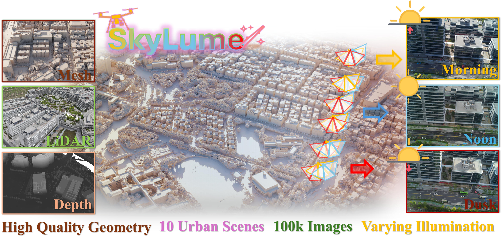
Urban regions
UAV images
Illumination periods
Per-view resolution
Geometry ground truth
Existing aerial reconstruction pipelines often bake observed lighting into textures, radiance fields, or Gaussians. SkyLume turns that nuisance into an explicit benchmark: each scene is revisited along the same RTK-guided flight path at three times of day, making cross-time robustness measurable rather than incidental.
The release is designed around geometry, appearance, and reproducibility. It provides five synchronized views per capture, unified 6-DoF poses, LiDAR-guided meshes, per-frame depth and normals, and solar geometry annotations for future de-shadowing, relighting, and inverse-rendering studies.
Morning, noon, and afternoon captures isolate lighting changes while keeping scene structure and viewpoints comparable.
LiDAR scans regularize weak-texture, shadowed, reflective, and water-adjacent regions during mesh construction.
The Temporal Consistency Coefficient evaluates whether albedo and geometry remain stable across illumination periods.
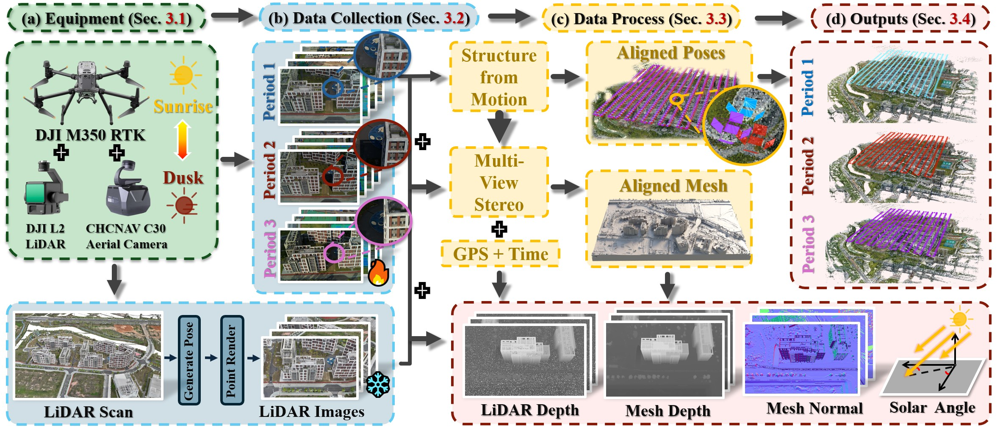

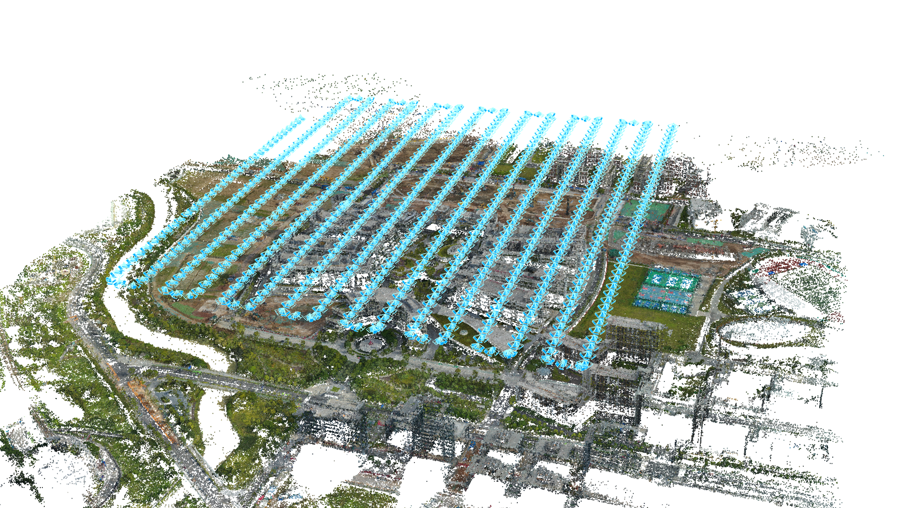
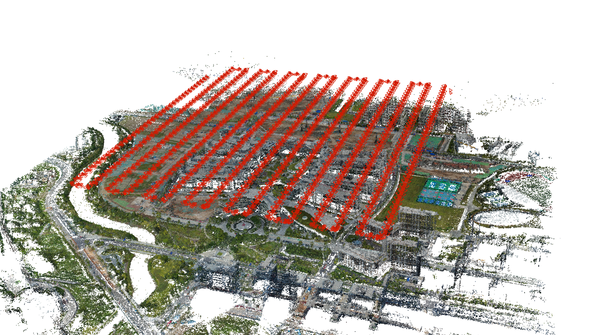
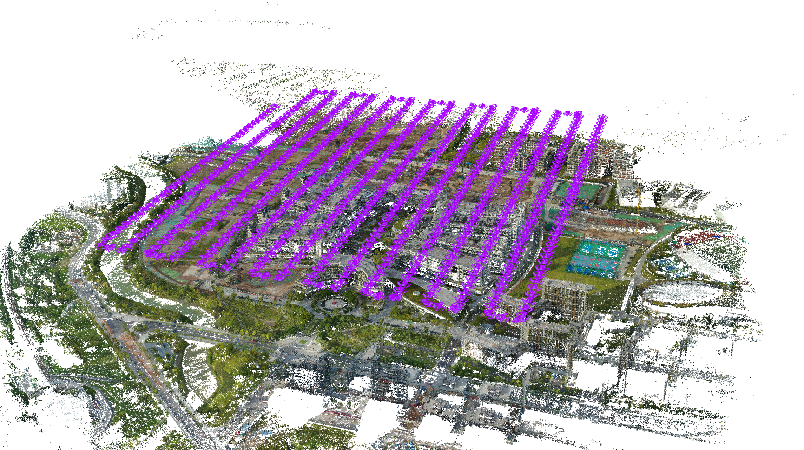
Each region is flown in three daily slots along the same trajectory, with 80% forward overlap, 60% side overlap, about 120 m flight height, and 1 Hz camera triggering.
The C30 camera records one nadir view and four oblique views at 26 MP per lens. The DJI L2 LiDAR provides centimeter-level metric support for geometry evaluation.
SkyLume exports COLMAP-style SfM packages, per-period poses, mesh depth, LiDAR depth, mesh normals, post-processed meshes, and solar angles.
A preview dataset is available on OneDrive. The full dataset will be uploaded to Hugging Face.
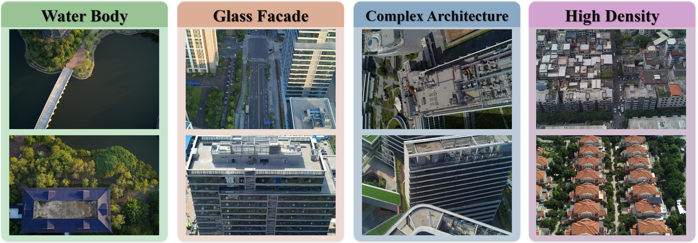
| Scale | Scene | Total images | Flight height | Density | Illumination setup | Water | Glass |
|---|---|---|---|---|---|---|---|
| Small | Gym | 6,185 | 120.366 m | Low | Sunlight / Sunlight / Overcast | No | No |
| Small | Staff Residence | 7,920 | 130.018 m | Medium | Sunlight / Partly cloudy / Overcast | Yes | No |
| Small | iPark | 5,355 | 115.241 m | Medium | Sunlight / Partly cloudy / Overcast | Yes | Yes |
| Medium | Tec School | 7,185 | 108.481 m | Low | Sunlight / Sunlight / Sunlight | Yes | No |
| Medium | Buildings | 10,455 | 129.891 m | High | Sunlight / Sunlight / Overcast | No | Yes |
| Medium | High School | 10,065 | 108.015 m | Medium | Sunlight / Partly cloudy / Sunlight | Yes | No |
| Medium | Main Campus | 10,410 | 130.280 m | Medium | Sunlight / Partly cloudy / Sunlight | No | No |
| Large | Estate | 18,630 | 109.024 m | High | Sunlight / Partly cloudy / Sunlight | No | No |
| Large | Town | 12,435 | 149.260 m | High | Sunlight / Partly cloudy / Overcast | Yes | Yes |
| Large | Med School | 20,700 | 119.250 m | Medium | Sunlight / Sunlight / Overcast | Yes | No |
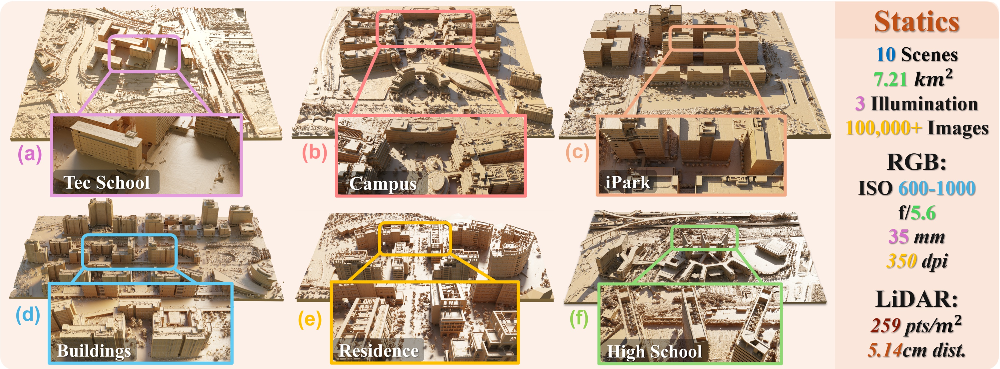
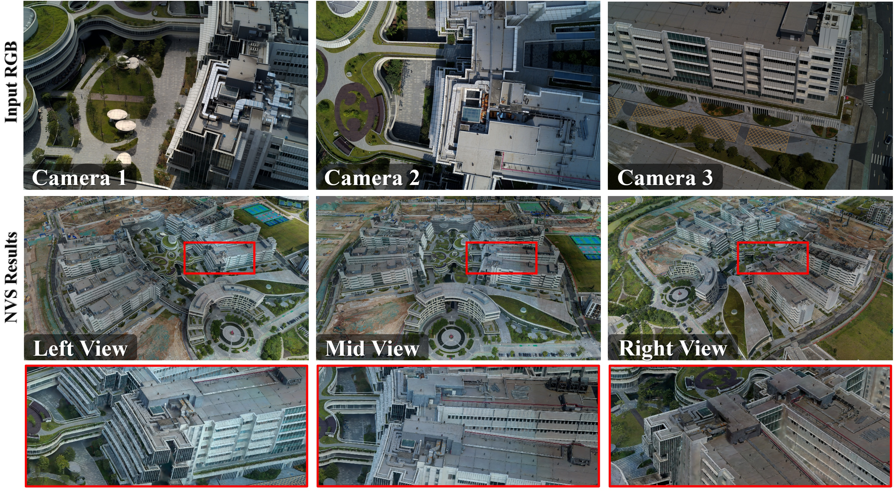
| Dataset | Real-world | LiDAR | Camera type | Light variation | Depth / normal | Resolution |
|---|---|---|---|---|---|---|
| ISPRS Benchmark | Yes | Terrestrial | Oblique | No | No | 6000 x 4000 |
| UrbanScene3D | Partial | Yes | Oblique | No | No | 5490 x 3651 |
| GauU-Scene | Yes | Yes | Oblique + Nadir | No | No | 5468 x 3636 |
| MatrixCity | No | From depth | Oblique + Nadir | Yes | Depth + normal | 1920 x 1080 |
| SkyLume | Yes | Yes | Oblique + Nadir | Yes | Depth + normal | 6252 x 4168 |
Inverse-rendering methods are evaluated by rendering albedo from matched viewpoints across three time slots.
Best reported mean overall: 0.775Meshes are compared to ground truth and against one another across illumination periods using F-1 consistency.
Best F-1 at 0.5 m: 0.719NVS quality is reported with PSNR, SSIM, and LPIPS on six UAV scenes under challenging sunlit captures.
Abs-GS is strongest overall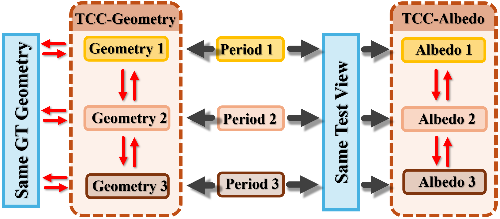
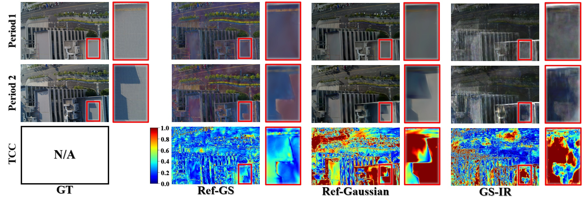
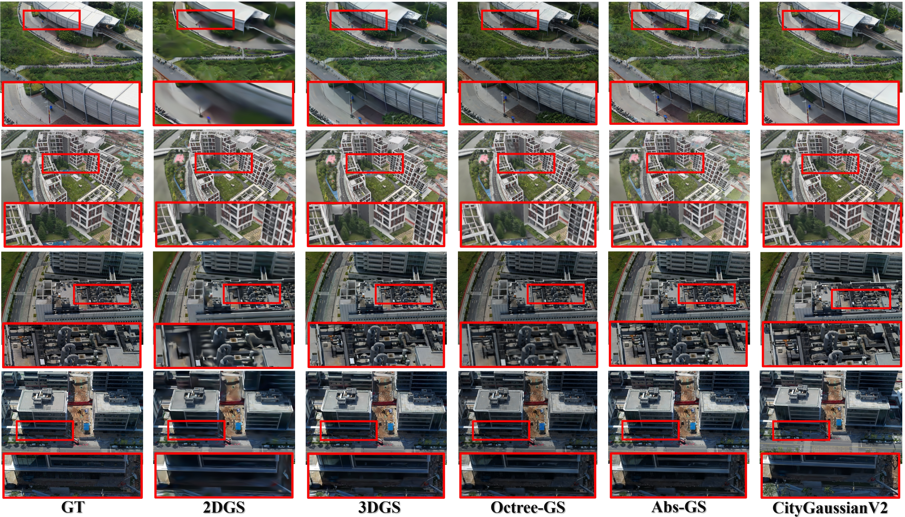
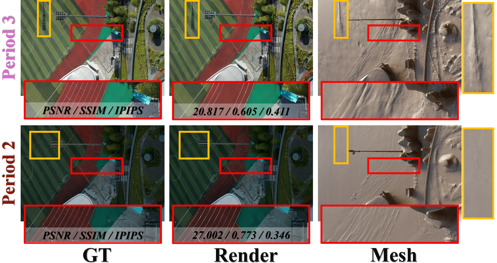
| Track | Method | Metric | Score | Interpretation |
|---|---|---|---|---|
| TCC-Albedo | GS-IR | Mean overall | 0.721 | Cross-time albedo consistency |
| TCC-Albedo | Ref-Gaussian | Mean overall | 0.658 | Cross-time albedo consistency |
| TCC-Albedo | Ref-GS | Mean overall | 0.775 | Best reported mean in the draft |
| TCC-Geometry | 2DGS | F-1 at 0.5 m | 0.675 | Average pairwise consistency |
| TCC-Geometry | CityGaussianV2 | F-1 at 0.5 m | 0.719 | Best reported geometry consistency |
@misc{li2026singlelightlargescaleaerial,
title={Beyond a Single Light: A Large-Scale Aerial Dataset for Urban Scene Reconstruction Under Varying Illumination},
author={Zhuoxiao Li and Wenzong Ma and Taoyu Wu and Jinjing Zhu and Shuai Zhang and Jing OU and Tongyan Hua and Yinrui Ren and Rongjun Qin and Hui Xiong and Wufan Zhao},
year={2026},
eprint={2512.14200},
archivePrefix={arXiv},
primaryClass={cs.CV},
url={https://arxiv.org/abs/2512.14200},
}